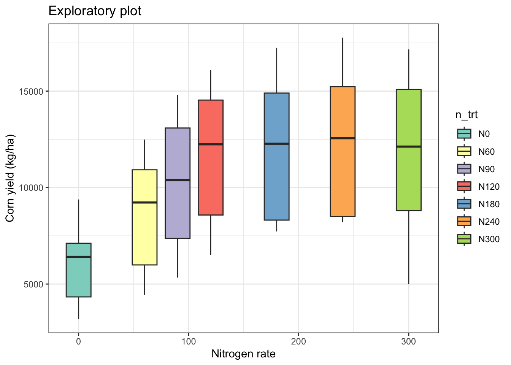
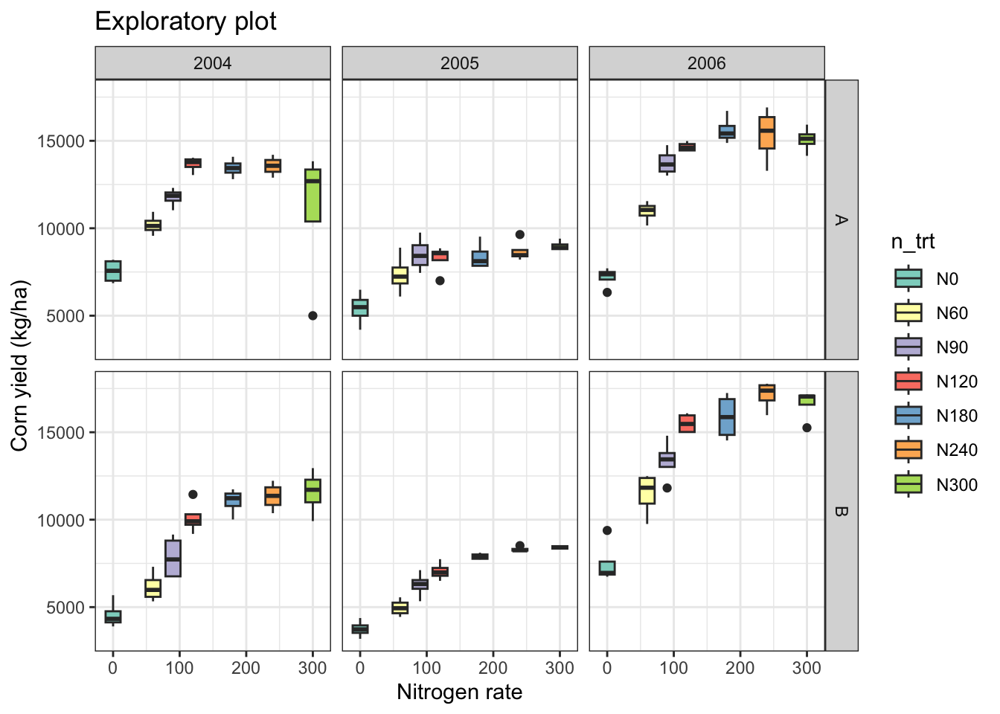
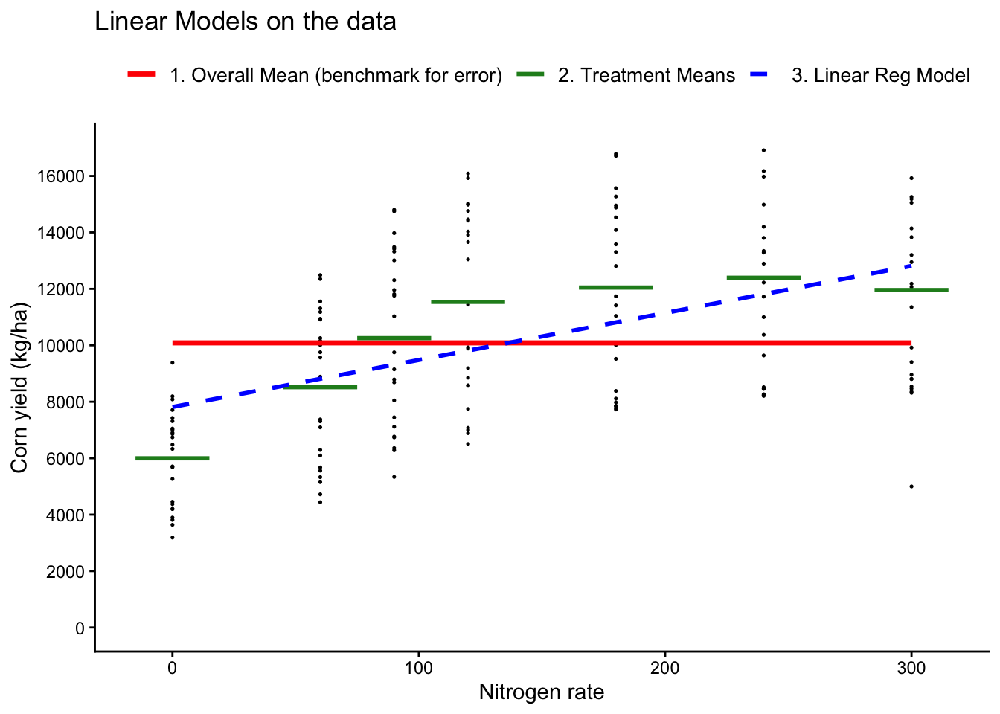
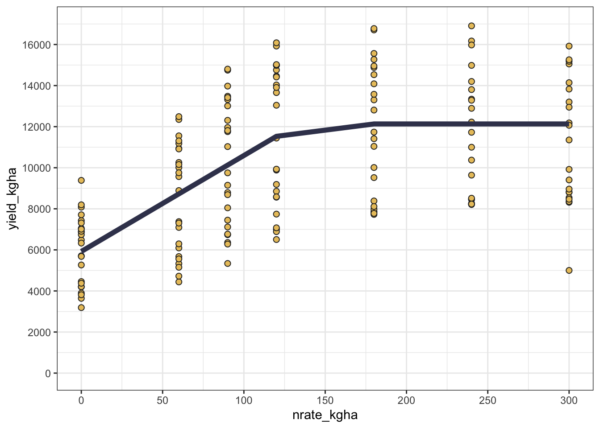
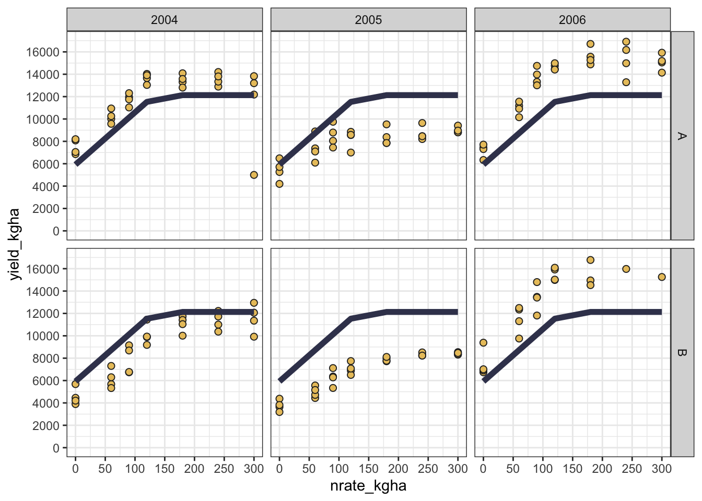

Statistical Models with R: I - Essentials
0.1 Introduction
Statistical modeling is a process of developing and analyzing mathematical models to represent real-world phenomena. In agricultural research, statistical modeling plays a crucial role in understanding the relationships between environmental variables, management practices, and crop responses. By leveraging statistical models, researchers can make informed decisions about optimizing yield, improving resource efficiency, and enhancing sustainability in agriculture.
In this lesson, we focus on the essentials of statistical modeling using R, with examples relevant to ag-data science. We will explore the use of statistical models to analyze field experiments, evaluate treatment effects, and understand interactions between genotype, environment, and management practices. The examples will utilize a fake dataset of corn response to N across site and years, and introduce key functions from stats, nlme, lme4, car, multcomp, and agricolae.
By the end of this lesson, students should be able to:
- Identify response vs predictors (numeric vs factor) in an agricultural dataset
- Write model formulas using
response ~ predictors(including interactions)
- Fit a simple linear model with
lm()and interpret the main output (estimates, standard errors, p-values)
- Explain (at a high level) when you might choose an LM, GLM, or mixed-effects model
0.1.1 Statistical Modeling Process
-
Data Collection and Exploratory Data Analysis (EDA)
- Statistical modeling starts with data collection and EDA. In agricultural experiments, this involves gathering data on yield, soil properties, weather conditions, and management practices. EDA helps identify patterns, trends, and relationships between variables while detecting outliers or anomalies.
-
Types of Statistical Models
- In agricultural research, common models include:
- Regression Models: For predicting continuous outcomes like crop yield based on variables such as soil nutrients or precipitation.
- Time Series Models: To analyze temporal data like seasonal growth patterns or yield trends over years.
- Mixed-Effects Models: Ideal for experimental designs with hierarchical structures, such as split-plot designs or repeated measures.
- In agricultural research, common models include:
-
Model Selection and Assumptions
- The choice of model depends on the data type, research question, and assumptions about the data. For example:
- Linear Regression assumes a linear relationship between predictors and outcome, suitable for continuous variables like yield or biomass. We call it linear because we are basically comparing “lines”, where the lines represent the “means”.
- Generalized Linear Models (GLM) are used for non-normal distributions, such as count data (e.g., pest counts) or binary outcomes (e.g., disease presence).
- The choice of model depends on the data type, research question, and assumptions about the data. For example:
-
Model Evaluation
- Evaluating model performance is crucial to ensure accurate predictions and inferences. In agricultural modeling, common metrics include:
- R-squared (R²): Measures the proportion of variation explained by the model. But it is NOT always recommended as a criterion the “select models”.
- Mean Squared Error (MSE) and Root Mean Squared Error (RMSE): Assess prediction accuracy.
- AIC and BIC: For model comparison and selection. These two are recommended when selecting a model.
- Evaluating model performance is crucial to ensure accurate predictions and inferences. In agricultural modeling, common metrics include:
-
Application in Agricultural Research
- Statistical models provide insights into complex agricultural systems, enabling researchers to:
- Identify Key Drivers: Determine which factors most influence crop performance, such as genotype-environment interactions.
- Predict Future Trends: Forecast yield potential under different climate scenarios or management practices.
- Optimize Inputs: Inform decision-making for fertilizer application, irrigation scheduling, or pest management.
- Statistical models provide insights into complex agricultural systems, enabling researchers to:
0.2 Essential R Packages
0.3 Data
This is a synthetic dataset of corn yield response to nitrogen fertilizer across two sites and three years with contrasting weather. The dataset includes the following variables:
Show code
Rows: 168
Columns: 7
$ site <fct> A, A, A, A, A, A, A, A, A, A, A, A, A, A, A, A, A, A, A, A,…
$ year <fct> 2004, 2004, 2004, 2004, 2004, 2004, 2004, 2004, 2004, 2004,…
$ block <fct> 1, 2, 3, 4, 1, 2, 3, 4, 1, 2, 3, 4, 1, 2, 3, 4, 1, 2, 3, 4,…
$ n_trt <fct> N0, N0, N0, N0, N60, N60, N60, N60, N90, N90, N90, N90, N12…
$ nrate_kgha <int> 0, 0, 0, 0, 60, 60, 60, 60, 90, 90, 90, 90, 120, 120, 120, …
$ yield_kgha <int> 6860, 7048, 8083, 8194, 10010, 9568, 10256, 10939, 11959, 1…
$ weather <chr> "normal", "normal", "normal", "normal", "normal", "normal",…0.4 EDA
Show code
# Plot boxplots faceted by site and year
eda_plot <- cornn_data %>%
ggplot(aes(x = nrate_kgha, y = yield_kgha)) +
geom_boxplot(aes(fill = n_trt)) +
scale_fill_brewer(palette = "Set3") +
#facet_grid(site ~ year) +
labs(title = "Exploratory plot",
x = "Nitrogen rate",
y = "Corn yield (kg/ha)") +
theme_bw()
eda_plot
Show code
# Add facet by year and site
eda_plot +
facet_grid(site ~ year)
0.5 Key Statistical Models
0.5.1 Linear Models (LM)
Linear regression models are fundamental for analyzing relationships between variables. The term “regression” could be confusing because it means we are working with a “continous response variable”, but it could also mean we using a “continuous covariate” (or independent / or explanatory variable) (e.g. a “regressor”).
-
Response / outcome: the variable you want to explain or predict (often written as Y), e.g.,
yield_kgha -
Predictor / explanatory variable: variables used to explain variation in the response (often X), e.g.,
n_trt,nrate_kgha,site,year - Factor predictor: categorical variable (treatments, genotype, site). Effects are interpreted as differences among levels.
- Numeric predictor: continuous variable (e.g., N rate). Effects are interpreted as change in response per unit change in X.
- Fixed vs random effects (preview): fixed effects estimate specific level differences you care about; random effects represent grouping/cluster structure (blocks, farms, years) and help get appropriate uncertainty.
0.5.1.1 Categorical covariate/s as independent variable/s
Show code
Call:
lm(formula = yield_kgha ~ n_trt, data = cornn_data)
Residuals:
Min 1Q Median 3Q Max
-6957.0 -2806.3 352.8 2515.1 5380.8
Coefficients:
Estimate Std. Error t value Pr(>|t|)
(Intercept) 5996.4 622.9 9.626 < 2e-16 ***
n_trtN60 2520.7 881.0 2.861 0.00478 **
n_trtN90 4257.5 881.0 4.833 3.12e-06 ***
n_trtN120 5542.7 881.0 6.292 2.85e-09 ***
n_trtN180 6049.9 881.0 6.867 1.35e-10 ***
n_trtN240 6396.7 881.0 7.261 1.55e-11 ***
n_trtN300 5960.5 881.0 6.766 2.33e-10 ***
---
Signif. codes: 0 '***' 0.001 '**' 0.01 '*' 0.05 '.' 0.1 ' ' 1
Residual standard error: 3052 on 161 degrees of freedom
Multiple R-squared: 0.3481, Adjusted R-squared: 0.3238
F-statistic: 14.33 on 6 and 161 DF, p-value: 4.687e-13
Call:
lm(formula = yield_kgha ~ 0 + n_trt, data = cornn_data)
Residuals:
Min 1Q Median 3Q Max
-6957.0 -2806.3 352.7 2515.1 5380.8
Coefficients:
Estimate Std. Error t value Pr(>|t|)
n_trtN0 5996.4 622.9 9.626 <2e-16 ***
n_trtN60 8517.1 622.9 13.673 <2e-16 ***
n_trtN90 10253.9 622.9 16.461 <2e-16 ***
n_trtN120 11539.1 622.9 18.524 <2e-16 ***
n_trtN180 12046.3 622.9 19.338 <2e-16 ***
n_trtN240 12393.2 622.9 19.895 <2e-16 ***
n_trtN300 11957.0 622.9 19.195 <2e-16 ***
---
Signif. codes: 0 '***' 0.001 '**' 0.01 '*' 0.05 '.' 0.1 ' ' 1
Residual standard error: 3052 on 161 degrees of freedom
Multiple R-squared: 0.9266, Adjusted R-squared: 0.9234
F-statistic: 290.3 on 7 and 161 DF, p-value: < 2.2e-16Show code
# Model diagnostics (using the performance package)
# This creates a compact set of checks/plots for key assumptions:
# linearity, normality of residuals, homoscedasticity, influential points, etc.
# performance::check_model(model=lm_fit_01)1 Alternative models
Show code
# Blocks (as fixed)
lm_fit_02 <- lm(yield_kgha ~ n_trt + block , data = cornn_data)
# Add year (as fixed)
lm_fit_03 <- lm(yield_kgha ~ n_trt + block + year, data = cornn_data)
# Add site (as fixed)
lm_fit_04 <- lm(yield_kgha ~ n_trt + block + year + site, data = cornn_data)
# Different order
lm_fit_05 <- lm(yield_kgha ~ n_trt + year + site + block, data = cornn_data)
summary(lm_fit_04)
Call:
lm(formula = yield_kgha ~ n_trt + block + year + site, data = cornn_data)
Residuals:
Min 1Q Median 3Q Max
-7203.8 -800.9 -39.3 960.4 2908.5
Coefficients:
Estimate Std. Error t value Pr(>|t|)
(Intercept) 6740.8 413.4 16.305 < 2e-16 ***
n_trtN60 2520.7 429.0 5.875 2.49e-08 ***
n_trtN90 4257.5 429.0 9.924 < 2e-16 ***
n_trtN120 5542.7 429.0 12.919 < 2e-16 ***
n_trtN180 6049.9 429.0 14.101 < 2e-16 ***
n_trtN240 6396.7 429.0 14.910 < 2e-16 ***
n_trtN300 5960.5 429.0 13.893 < 2e-16 ***
block2 -305.9 324.3 -0.943 0.347
block3 -468.1 324.3 -1.443 0.151
block4 -497.5 324.3 -1.534 0.127
year2005 -2965.8 280.9 -10.560 < 2e-16 ***
year2006 3303.6 280.9 11.762 < 2e-16 ***
siteB -1078.2 229.3 -4.701 5.67e-06 ***
---
Signif. codes: 0 '***' 0.001 '**' 0.01 '*' 0.05 '.' 0.1 ' ' 1
Residual standard error: 1486 on 155 degrees of freedom
Multiple R-squared: 0.8511, Adjusted R-squared: 0.8396
F-statistic: 73.86 on 12 and 155 DF, p-value: < 2.2e-16Show code
summary(lm_fit_05)
Call:
lm(formula = yield_kgha ~ n_trt + year + site + block, data = cornn_data)
Residuals:
Min 1Q Median 3Q Max
-7203.8 -800.9 -39.3 960.4 2908.5
Coefficients:
Estimate Std. Error t value Pr(>|t|)
(Intercept) 6740.8 413.4 16.305 < 2e-16 ***
n_trtN60 2520.7 429.0 5.875 2.49e-08 ***
n_trtN90 4257.5 429.0 9.924 < 2e-16 ***
n_trtN120 5542.7 429.0 12.919 < 2e-16 ***
n_trtN180 6049.9 429.0 14.101 < 2e-16 ***
n_trtN240 6396.7 429.0 14.910 < 2e-16 ***
n_trtN300 5960.5 429.0 13.893 < 2e-16 ***
year2005 -2965.8 280.9 -10.560 < 2e-16 ***
year2006 3303.6 280.9 11.762 < 2e-16 ***
siteB -1078.2 229.3 -4.701 5.67e-06 ***
block2 -305.9 324.3 -0.943 0.347
block3 -468.1 324.3 -1.443 0.151
block4 -497.5 324.3 -1.534 0.127
---
Signif. codes: 0 '***' 0.001 '**' 0.01 '*' 0.05 '.' 0.1 ' ' 1
Residual standard error: 1486 on 155 degrees of freedom
Multiple R-squared: 0.8511, Adjusted R-squared: 0.8396
F-statistic: 73.86 on 12 and 155 DF, p-value: < 2.2e-161.0.0.1 Continuous covariate/s as independent variable/s
Show code
Call:
lm(formula = yield_kgha ~ nrate_kgha, data = cornn_data)
Residuals:
Min 1Q Median 3Q Max
-8424.1 -2984.2 -251.2 2596.0 6117.9
Coefficients:
Estimate Std. Error t value Pr(>|t|)
(Intercept) 7676.634 438.308 17.51 < 2e-16 ***
nrate_kgha 19.158 2.554 7.50 3.66e-12 ***
---
Signif. codes: 0 '***' 0.001 '**' 0.01 '*' 0.05 '.' 0.1 ' ' 1
Residual standard error: 3217 on 166 degrees of freedom
Multiple R-squared: 0.2531, Adjusted R-squared: 0.2486
F-statistic: 56.25 on 1 and 166 DF, p-value: 3.658e-12Show code
# Compare to N as a categorical variable
summary(lm_fit_01)
Call:
lm(formula = yield_kgha ~ n_trt, data = cornn_data)
Residuals:
Min 1Q Median 3Q Max
-6957.0 -2806.3 352.8 2515.1 5380.8
Coefficients:
Estimate Std. Error t value Pr(>|t|)
(Intercept) 5996.4 622.9 9.626 < 2e-16 ***
n_trtN60 2520.7 881.0 2.861 0.00478 **
n_trtN90 4257.5 881.0 4.833 3.12e-06 ***
n_trtN120 5542.7 881.0 6.292 2.85e-09 ***
n_trtN180 6049.9 881.0 6.867 1.35e-10 ***
n_trtN240 6396.7 881.0 7.261 1.55e-11 ***
n_trtN300 5960.5 881.0 6.766 2.33e-10 ***
---
Signif. codes: 0 '***' 0.001 '**' 0.01 '*' 0.05 '.' 0.1 ' ' 1
Residual standard error: 3052 on 161 degrees of freedom
Multiple R-squared: 0.3481, Adjusted R-squared: 0.3238
F-statistic: 14.33 on 6 and 161 DF, p-value: 4.687e-13Show code
## Plot both models
# Treatment means for the categorical model (ANOVA model)
trt_means <- cornn_data %>% group_by(nrate_kgha,n_trt) %>% summarise(mean_yield = mean(yield_kgha))
cornn_data %>%
ggplot(aes(x = nrate_kgha, y = yield_kgha)) +
geom_point(size = 0.25) +
# Add overall mean as a horizontal line (benchmark for error)
geom_smooth(aes(color = "1. Overall Mean (benchmark for error)"),
method = "lm", formula = y ~ 1, se = FALSE,
linetype = "solid", linewidth = 1.2) +
# Add treatment means as horizontal segments
geom_segment(data = trt_means,
aes(x = nrate_kgha - 15, xend = nrate_kgha + 15,
y = mean_yield, yend = mean_yield,
color = "2. Treatment Means"),
linetype = "solid", linewidth = 1.0) +
# Add linear regression line
geom_smooth(aes(color = "3. Linear Reg Model"),
method = "lm", formula = y ~ x, se = FALSE,
linetype = "dashed", linewidth = 1.0) +
# Show legends
scale_color_manual(
name = "",
values = c("1. Overall Mean (benchmark for error)" = "red",
"2. Treatment Means" = "forestgreen",
"3. Linear Reg Model" = "blue" ) ) +
# Adjust Y axis scale
scale_y_continuous(limits = c(0, 17000), breaks = seq(0, 16000, by = 2000)) +
labs(title = "Linear Models on the data",
x = "Nitrogen rate",
y = "Corn yield (kg/ha)") +
theme_classic()+
theme(legend.position = "top",
legend.text = element_text(size = 10),
legend.title = element_text(size = 11, face = "bold") )
1.0.1 Generalized Linear Models (GLM)
GLMs extend linear models to handle non-normal response distributions. In agricultural research, they are useful for modeling yield data with non-constant variance or non-normal residuals.
1.0.1.1 Example using GLM as an LM
lm() is just a special case of glm where the distribution of error is assumed to be Gaussian (i.e. normal)
Show code
Call:
glm(formula = yield_kgha ~ n_trt + block, family = gaussian,
data = cornn_data)
Coefficients:
Estimate Std. Error t value Pr(>|t|)
(Intercept) 6314.3 749.9 8.420 2.16e-14 ***
n_trtN60 2520.7 887.3 2.841 0.00509 **
n_trtN90 4257.5 887.3 4.798 3.68e-06 ***
n_trtN120 5542.7 887.3 6.246 3.72e-09 ***
n_trtN180 6049.9 887.3 6.818 1.85e-10 ***
n_trtN240 6396.7 887.3 7.209 2.19e-11 ***
n_trtN300 5960.5 887.3 6.717 3.17e-10 ***
block2 -305.9 670.8 -0.456 0.64898
block3 -468.1 670.8 -0.698 0.48627
block4 -497.5 670.8 -0.742 0.45935
---
Signif. codes: 0 '***' 0.001 '**' 0.01 '*' 0.05 '.' 0.1 ' ' 1
(Dispersion parameter for gaussian family taken to be 9448312)
Null deviance: 2300065906 on 167 degrees of freedom
Residual deviance: 1492833301 on 158 degrees of freedom
AIC: 3186.8
Number of Fisher Scoring iterations: 2Show code
# Compare to lm
summary(lm_fit_02)
Call:
lm(formula = yield_kgha ~ n_trt + block, data = cornn_data)
Residuals:
Min 1Q Median 3Q Max
-6777.3 -2784.1 110.9 2617.3 5560.5
Coefficients:
Estimate Std. Error t value Pr(>|t|)
(Intercept) 6314.3 749.9 8.420 2.16e-14 ***
n_trtN60 2520.7 887.3 2.841 0.00509 **
n_trtN90 4257.5 887.3 4.798 3.68e-06 ***
n_trtN120 5542.7 887.3 6.246 3.72e-09 ***
n_trtN180 6049.9 887.3 6.818 1.85e-10 ***
n_trtN240 6396.7 887.3 7.209 2.19e-11 ***
n_trtN300 5960.5 887.3 6.717 3.17e-10 ***
block2 -305.9 670.8 -0.456 0.64898
block3 -468.1 670.8 -0.698 0.48627
block4 -497.5 670.8 -0.742 0.45935
---
Signif. codes: 0 '***' 0.001 '**' 0.01 '*' 0.05 '.' 0.1 ' ' 1
Residual standard error: 3074 on 158 degrees of freedom
Multiple R-squared: 0.351, Adjusted R-squared: 0.314
F-statistic: 9.493 on 9 and 158 DF, p-value: 1.707e-111.0.1.2 Example using the Gaussian family with log link:
These approaches are particularly useful when yield data exhibit heteroscedasticity or skewness.
- For this first approach, the model assumes a multiplicative relationship between predictors and yield, modeling the expected value as an exponential function.
Thus, the underlying model is:
\[E(Y) = \exp(X\beta)\] , where the expected value of yield, \(E(Y)\), is modeled as an exponential function of the predictors \(\exp(X\beta)\).
If you believe the relationship between predictors and the expected value of yield is multiplicative, use this approach.
Show code
Call:
glm(formula = yield_kgha ~ n_trt + block, family = gaussian(link = "log"),
data = cornn_data)
Coefficients:
Estimate Std. Error t value Pr(>|t|)
(Intercept) 8.72951 0.11100 78.642 < 2e-16 ***
n_trtN60 0.35125 0.12794 2.746 0.00674 **
n_trtN90 0.53706 0.12118 4.432 1.74e-05 ***
n_trtN120 0.65478 0.11790 5.554 1.16e-07 ***
n_trtN180 0.69827 0.11685 5.976 1.47e-08 ***
n_trtN240 0.72675 0.11621 6.254 3.59e-09 ***
n_trtN300 0.69131 0.11701 5.908 2.06e-08 ***
block2 -0.02672 0.06206 -0.431 0.66740
block3 -0.04485 0.06265 -0.716 0.47512
block4 -0.05415 0.06295 -0.860 0.39104
---
Signif. codes: 0 '***' 0.001 '**' 0.01 '*' 0.05 '.' 0.1 ' ' 1
(Dispersion parameter for gaussian family taken to be 9438218)
Null deviance: 2300065906 on 167 degrees of freedom
Residual deviance: 1491238278 on 158 degrees of freedom
AIC: 3186.6
Number of Fisher Scoring iterations: 5Show code
# Is the model any better? Let's compare AICs
AIC(glm_fit_01, glm_fit_02) df AIC
glm_fit_01 11 3186.76
glm_fit_02 11 3186.58With family = gaussian(link = "log"), effects are multiplicative on the original yield scale.
- A coefficient of 0.05 implies approximately a 5% increase in the expected yield (holding other predictors constant).
- You can exponentiate coefficients to interpret them as ratios:
Alternatively, you may want to manually log-transform the response:
- For this second approach, the log-transformed yield is modeled as a linear function of the predictors, stabilizing variance or normalizing residuals.
In the second case, the model is:
\[\log(Y) = X\beta + \epsilon \],
which is a linear model \(X\beta + \epsilon\) on the log-transformed outcome, \(\log(Y)\).
If you want to stabilize variance or normalize the residuals, use this second approach.
Show code
Call:
glm(formula = log(yield_kgha) ~ n_trt + block, family = gaussian(link = "identity"),
data = cornn_data)
Coefficients:
Estimate Std. Error t value Pr(>|t|)
(Intercept) 8.68781 0.07568 114.790 < 2e-16 ***
n_trtN60 0.34152 0.08955 3.814 0.000196 ***
n_trtN90 0.53268 0.08955 5.948 1.68e-08 ***
n_trtN120 0.65196 0.08955 7.280 1.48e-11 ***
n_trtN180 0.70064 0.08955 7.824 6.88e-13 ***
n_trtN240 0.73008 0.08955 8.153 1.03e-13 ***
n_trtN300 0.68772 0.08955 7.680 1.57e-12 ***
block2 -0.03036 0.06769 -0.448 0.654418
block3 -0.04711 0.06769 -0.696 0.487540
block4 -0.04575 0.06769 -0.676 0.500138
---
Signif. codes: 0 '***' 0.001 '**' 0.01 '*' 0.05 '.' 0.1 ' ' 1
(Dispersion parameter for gaussian family taken to be 0.09623175)
Null deviance: 25.458 on 167 degrees of freedom
Residual deviance: 15.205 on 158 degrees of freedom
AIC: 95.166
Number of Fisher Scoring iterations: 2We may be tempted to compare AIC between glm_fit_02 and glm_fit_03, but they are not directly comparable because they model different response variables units (yield vs log(yield)).
Show code
# Is the model any better? Let's compare AICs
AIC(glm_fit_01, glm_fit_02, glm_fit_03) df AIC
glm_fit_01 11 3186.75960
glm_fit_02 11 3186.58001
glm_fit_03 11 95.166051.0.2 Mixed-Effects Models
Mixed-effects models are especially useful when observations are grouped (e.g., blocks, fields, farms, years).
Adding random effects helps you:
- Account for non-independence within groups (better uncertainty / standard errors)
- Model baseline differences among blocks/fields/years (partial pooling)
- Extend models to more realistic experimental structures (nested or repeated measures)
Mixed-effects models account for both fixed and random effects, often used in agricultural experiments.
Using nlme:
Show code
lme_fit <- lme(yield_kgha ~ n_trt, random = ~1 | block, data = cornn_data)
summary(lme_fit)Linear mixed-effects model fit by REML
Data: cornn_data
AIC BIC logLik
3080.698 3108.431 -1531.349
Random effects:
Formula: ~1 | block
(Intercept) Residual
StdDev: 0.2142958 3051.714
Fixed effects: yield_kgha ~ n_trt
Value Std.Error DF t-value p-value
(Intercept) 5996.417 622.9286 158 9.626170 0.0000
n_trtN60 2520.667 880.9541 158 2.861292 0.0048
n_trtN90 4257.500 880.9541 158 4.832828 0.0000
n_trtN120 5542.708 880.9541 158 6.291711 0.0000
n_trtN180 6049.875 880.9541 158 6.867412 0.0000
n_trtN240 6396.750 880.9541 158 7.261162 0.0000
n_trtN300 5960.542 880.9541 158 6.766007 0.0000
Correlation:
(Intr) n_tN60 n_tN90 n_N120 n_N180 n_N240
n_trtN60 -0.707
n_trtN90 -0.707 0.500
n_trtN120 -0.707 0.500 0.500
n_trtN180 -0.707 0.500 0.500 0.500
n_trtN240 -0.707 0.500 0.500 0.500 0.500
n_trtN300 -0.707 0.500 0.500 0.500 0.500 0.500
Standardized Within-Group Residuals:
Min Q1 Med Q3 Max
-2.2796885 -0.9195787 0.1155907 0.8241644 1.7632165
Number of Observations: 168
Number of Groups: 4 Using lme4:
Show code
lmer_fit <- lmer(yield_kgha ~ n_trt + (1 | block), data = cornn_data)
summary(lmer_fit)Linear mixed model fit by REML ['lmerMod']
Formula: yield_kgha ~ n_trt + (1 | block)
Data: cornn_data
REML criterion at convergence: 3062.7
Scaled residuals:
Min 1Q Median 3Q Max
-2.2797 -0.9196 0.1156 0.8242 1.7632
Random effects:
Groups Name Variance Std.Dev.
block (Intercept) 0 0
Residual 9312961 3052
Number of obs: 168, groups: block, 4
Fixed effects:
Estimate Std. Error t value
(Intercept) 5996.4 622.9 9.626
n_trtN60 2520.7 881.0 2.861
n_trtN90 4257.5 881.0 4.833
n_trtN120 5542.7 881.0 6.292
n_trtN180 6049.9 881.0 6.867
n_trtN240 6396.8 881.0 7.261
n_trtN300 5960.5 881.0 6.766
Correlation of Fixed Effects:
(Intr) n_tN60 n_tN90 n_N120 n_N180 n_N240
n_trtN60 -0.707
n_trtN90 -0.707 0.500
n_trtN120 -0.707 0.500 0.500
n_trtN180 -0.707 0.500 0.500 0.500
n_trtN240 -0.707 0.500 0.500 0.500 0.500
n_trtN300 -0.707 0.500 0.500 0.500 0.500 0.500
optimizer (nloptwrap) convergence code: 0 (OK)
boundary (singular) fit: see help('isSingular')
1.0.3 Choosing Between nlme and lme4
nlme: Suitable for models that are linear and nonlinear mixed-effects models. It provides robust tools for analyzing data with nested random effects and handling different types of correlation structures within the data. It can handle heterogeneous variance models.
lme4: Best for fitting large linear mixed-effects models. It does not handle nonlinear mixed-effects models or autoregressive correlation structures but is highly efficient with large datasets and complex random effects structures. It does not directly support residual variance structures (e.g.,
varIdent) the waynlmedoes.
1.0.4 Analysis of Variance (ANOVA)
Analysis of Variance (ANOVA) is widely used in agricultural research to compare the means of multiple groups and to understand the influence of categorical factors on continuous outcomes, such as yield or biomass. In R, there are multiple ways to perform ANOVA:
-
anova(): Sequential (Type I) ANOVA -
aov(): Similar for balanced designs -
car::Anova(): Flexible ANOVA with options for Type II and Type III Sum of Squares
1.0.4.1 Using anova()
anova() performs Type I Sum of Squares (sequential). It tests each term sequentially, considering the order of the terms in the model.
Show code
Analysis of Variance Table
Response: yield_kgha
Df Sum Sq Mean Sq F value Pr(>F)
block 3 6553460 2184487 0.989 0.3997
n_trt 6 800679144 133446524 60.416 < 2.2e-16 ***
year 2 1101644416 550822208 249.375 < 2.2e-16 ***
site 1 48823699 48823699 22.104 5.667e-06 ***
Residuals 155 342365186 2208808
---
Signif. codes: 0 '***' 0.001 '**' 0.01 '*' 0.05 '.' 0.1 ' ' 1
1.0.4.2 Using aov()
aov() is similar to lm() but is designed for balanced experimental designs. It also uses Type I Sum of Squares.
Show code
Df Sum Sq Mean Sq F value Pr(>F)
n_trt 6 8.007e+08 133446524 60.416 < 2e-16 ***
year 2 1.102e+09 550822208 249.375 < 2e-16 ***
site 1 4.882e+07 48823699 22.104 5.67e-06 ***
block 3 6.553e+06 2184487 0.989 0.4
Residuals 155 3.424e+08 2208808
---
Signif. codes: 0 '***' 0.001 '**' 0.01 '*' 0.05 '.' 0.1 ' ' 1
1.0.4.3 Using car::Anova()
The Anova() function from the car package allows for Type II and Type III Sum of Squares:
- Type II: Assumes no interaction between factors and tests each main effect after the other main effects.
- Type III: Tests each main effect and interaction/s after all other terms.
Show code
car::Anova(lm_fit, type = 2) # Type II Sum of SquaresAnova Table (Type II tests)
Response: yield_kgha
Sum Sq Df F value Pr(>F)
block 6553460 3 0.989 0.3997
n_trt 800679144 6 60.416 < 2.2e-16 ***
year 1101644416 2 249.375 < 2.2e-16 ***
site 48823699 1 22.104 5.667e-06 ***
Residuals 342365186 155
---
Signif. codes: 0 '***' 0.001 '**' 0.01 '*' 0.05 '.' 0.1 ' ' 1Show code
car::Anova(lm_fit, type = 3) # Type III Sum of SquaresAnova Table (Type III tests)
Response: yield_kgha
Sum Sq Df F value Pr(>F)
(Intercept) 587202288 1 265.846 < 2.2e-16 ***
block 6553460 3 0.989 0.3997
n_trt 800679144 6 60.416 < 2.2e-16 ***
year 1101644416 2 249.375 < 2.2e-16 ***
site 48823699 1 22.104 5.667e-06 ***
Residuals 342365186 155
---
Signif. codes: 0 '***' 0.001 '**' 0.01 '*' 0.05 '.' 0.1 ' ' 11.0.4.4 Comparison of anova() vs. Anova()
Show code
# For the anova(), the order of factors matter
anova(lm_fit_01)Analysis of Variance Table
Response: yield_kgha
Df Sum Sq Mean Sq F value Pr(>F)
n_trt 6 800679144 133446524 14.329 4.687e-13 ***
Residuals 161 1499386761 9312961
---
Signif. codes: 0 '***' 0.001 '**' 0.01 '*' 0.05 '.' 0.1 ' ' 1Show code
anova(lm_fit_02)Analysis of Variance Table
Response: yield_kgha
Df Sum Sq Mean Sq F value Pr(>F)
n_trt 6 800679144 133446524 14.1238 7.656e-13 ***
block 3 6553460 2184487 0.2312 0.8745
Residuals 158 1492833301 9448312
---
Signif. codes: 0 '***' 0.001 '**' 0.01 '*' 0.05 '.' 0.1 ' ' 1Show code
anova(lm_fit_03)Analysis of Variance Table
Response: yield_kgha
Df Sum Sq Mean Sq F value Pr(>F)
n_trt 6 800679144 133446524 53.2164 <2e-16 ***
block 3 6553460 2184487 0.8711 0.4575
year 2 1101644416 550822208 219.6593 <2e-16 ***
Residuals 156 391188885 2507621
---
Signif. codes: 0 '***' 0.001 '**' 0.01 '*' 0.05 '.' 0.1 ' ' 1Show code
anova(lm_fit_04)Analysis of Variance Table
Response: yield_kgha
Df Sum Sq Mean Sq F value Pr(>F)
n_trt 6 800679144 133446524 60.416 < 2.2e-16 ***
block 3 6553460 2184487 0.989 0.3997
year 2 1101644416 550822208 249.375 < 2.2e-16 ***
site 1 48823699 48823699 22.104 5.667e-06 ***
Residuals 155 342365186 2208808
---
Signif. codes: 0 '***' 0.001 '**' 0.01 '*' 0.05 '.' 0.1 ' ' 1Show code
anova(lm_fit_05)Analysis of Variance Table
Response: yield_kgha
Df Sum Sq Mean Sq F value Pr(>F)
n_trt 6 800679144 133446524 60.416 < 2.2e-16 ***
year 2 1101644416 550822208 249.375 < 2.2e-16 ***
site 1 48823699 48823699 22.104 5.667e-06 ***
block 3 6553460 2184487 0.989 0.3997
Residuals 155 342365186 2208808
---
Signif. codes: 0 '***' 0.001 '**' 0.01 '*' 0.05 '.' 0.1 ' ' 1Show code
# For the Anova(type=3), the order of factors doesn't matter
car::Anova(lm_fit_01, type = 3)Anova Table (Type III tests)
Response: yield_kgha
Sum Sq Df F value Pr(>F)
(Intercept) 862968308 1 92.663 < 2.2e-16 ***
n_trt 800679144 6 14.329 4.687e-13 ***
Residuals 1499386761 161
---
Signif. codes: 0 '***' 0.001 '**' 0.01 '*' 0.05 '.' 0.1 ' ' 1Show code
car::Anova(lm_fit_02, type = 3)Anova Table (Type III tests)
Response: yield_kgha
Sum Sq Df F value Pr(>F)
(Intercept) 669823217 1 70.8934 2.155e-14 ***
n_trt 800679144 6 14.1238 7.656e-13 ***
block 6553460 3 0.2312 0.8745
Residuals 1492833301 158
---
Signif. codes: 0 '***' 0.001 '**' 0.01 '*' 0.05 '.' 0.1 ' ' 1Show code
car::Anova(lm_fit_03, type = 3)Anova Table (Type III tests)
Response: yield_kgha
Sum Sq Df F value Pr(>F)
(Intercept) 538455574 1 214.7276 <2e-16 ***
n_trt 800679144 6 53.2164 <2e-16 ***
block 6553460 3 0.8711 0.4575
year 1101644416 2 219.6593 <2e-16 ***
Residuals 391188885 156
---
Signif. codes: 0 '***' 0.001 '**' 0.01 '*' 0.05 '.' 0.1 ' ' 1Show code
car::Anova(lm_fit_04, type = 3)Anova Table (Type III tests)
Response: yield_kgha
Sum Sq Df F value Pr(>F)
(Intercept) 587202288 1 265.846 < 2.2e-16 ***
n_trt 800679144 6 60.416 < 2.2e-16 ***
block 6553460 3 0.989 0.3997
year 1101644416 2 249.375 < 2.2e-16 ***
site 48823699 1 22.104 5.667e-06 ***
Residuals 342365186 155
---
Signif. codes: 0 '***' 0.001 '**' 0.01 '*' 0.05 '.' 0.1 ' ' 1Show code
car::Anova(lm_fit_05, type = 3)Anova Table (Type III tests)
Response: yield_kgha
Sum Sq Df F value Pr(>F)
(Intercept) 587202288 1 265.846 < 2.2e-16 ***
n_trt 800679144 6 60.416 < 2.2e-16 ***
year 1101644416 2 249.375 < 2.2e-16 ***
site 48823699 1 22.104 5.667e-06 ***
block 6553460 3 0.989 0.3997
Residuals 342365186 155
---
Signif. codes: 0 '***' 0.001 '**' 0.01 '*' 0.05 '.' 0.1 ' ' 1In agricultural research, Type III Sum of Squares is particularly useful for unbalanced designs, such as field trials with missing data or unequal replications.
1.0.5 Post-hoc Tests
After detecting significant differences with ANOVA, post-hoc tests can be conducted to identify specific group differences.
Using emmeans and multcomp for multiple comparisons:
emmeans(estimated marginal means) computes model-based means for each treatment level, adjusted for the other terms in the model (i.e., “means on the model scale,” not raw averages).It’s the recommended workflow for post-hoc comparisons after aov()/lm()/lmer() because it works consistently across many model types.
pairs()gives pairwise contrasts (e.g., Tukey-adjusted), and cld() summarizes the results with grouping letters (levels sharing a letter are not significantly different at the chosen alpha).multcompis an older but still-valid toolkit for general linear hypotheses, whereglht()can test custom contrasts and multiple-comparison procedures (e.g., Tukey viamcp()).In practice, glht() can be finicky with model objects, factor names, or missing levels, and the output is less “teaching-friendly.”
For this course, we’ll prefer
emmeanspackage for post-hoc comparisons because it provides a consistent, readable workflow acrossaov(),lm(), and many mixed models, and integrates cleanly with compact letter displays viacld().
Show code
# Pairwise comparisons using emmeans (Tukey-adjusted)
emm_trt <- emmeans(aov_fit, ~ n_trt)
pairs(emm_trt, adjust = "tukey") contrast estimate SE df t.ratio p.value
N0 - N60 -2520.7 429 155 -5.875 <0.0001
N0 - N90 -4257.5 429 155 -9.924 <0.0001
N0 - N120 -5542.7 429 155 -12.919 <0.0001
N0 - N180 -6049.9 429 155 -14.101 <0.0001
N0 - N240 -6396.8 429 155 -14.910 <0.0001
N0 - N300 -5960.5 429 155 -13.893 <0.0001
N60 - N90 -1736.8 429 155 -4.048 0.0016
N60 - N120 -3022.0 429 155 -7.044 <0.0001
N60 - N180 -3529.2 429 155 -8.226 <0.0001
N60 - N240 -3876.1 429 155 -9.035 <0.0001
N60 - N300 -3439.9 429 155 -8.018 <0.0001
N90 - N120 -1285.2 429 155 -2.996 0.0489
N90 - N180 -1792.4 429 155 -4.178 0.0009
N90 - N240 -2139.2 429 155 -4.986 <0.0001
N90 - N300 -1703.0 429 155 -3.970 0.0021
N120 - N180 -507.2 429 155 -1.182 0.8999
N120 - N240 -854.0 429 155 -1.991 0.4248
N120 - N300 -417.8 429 155 -0.974 0.9589
N180 - N240 -346.9 429 155 -0.809 0.9838
N180 - N300 89.3 429 155 0.208 1.0000
N240 - N300 436.2 429 155 1.017 0.9495
Results are averaged over the levels of: year, site, block
P value adjustment: tukey method for comparing a family of 7 estimates Show code
# Compact letter display (grouping letters)
cld_trt <- as_tibble( cld(emm_trt, adjust = "tukey", Letters = letters,
reverse = FALSE, decreasing = TRUE) )
cld_trt# A tibble: 7 × 7
n_trt emmean SE df lower.CL upper.CL .group
<fct> <dbl> <dbl> <dbl> <dbl> <dbl> <chr>
1 N0 5996. 303. 155 5172. 6821. " a "
2 N60 8517. 303. 155 7692. 9342. " b "
3 N90 10254. 303. 155 9429. 11079. " c "
4 N120 11539. 303. 155 10714. 12364. " d"
5 N300 11957. 303. 155 11132. 12782. " d"
6 N180 12046. 303. 155 11222. 12871. " d"
7 N240 12393. 303. 155 11568. 13218. " d"1.0.6 Nonlinear Models
Nonlinear models are useful when the relationship between the predictor and response variables is not linear. In agricultural research, these models are commonly used to model yield response to inputs, such as nitrogen fertilizer.
For nonlinear relationships, we could use nls(). Let’s see an example using a couple of functions: #### linear-plateau
Show code
Formula: yield_kgha ~ a + b * pmin(nrate_kgha, x0)
Parameters:
Estimate Std. Error t value Pr(>|t|)
a 5923.370 560.879 10.561 < 2e-16 ***
b 46.715 6.944 6.728 2.7e-10 ***
x0 132.907 14.000 9.493 < 2e-16 ***
---
Signif. codes: 0 '***' 0.001 '**' 0.01 '*' 0.05 '.' 0.1 ' ' 1
Residual standard error: 3019 on 165 degrees of freedom
Number of iterations to convergence: 2
Achieved convergence tolerance: 6.223e-101.0.6.1 quadratic-plateau
Show code
Formula: yield_kgha ~ ifelse(nrate_kgha <= x0, a + b * nrate_kgha + c *
nrate_kgha^2, a + b * x0 + c * x0^2)
Parameters:
Estimate Std. Error t value Pr(>|t|)
a 5975.4359 615.1527 9.714 < 2e-16 ***
b 42.0291 23.4659 1.791 0.0751 .
c 0.0405 0.1937 0.209 0.8346
x0 130.1625 16.8981 7.703 1.2e-12 ***
---
Signif. codes: 0 '***' 0.001 '**' 0.01 '*' 0.05 '.' 0.1 ' ' 1
Residual standard error: 3027 on 164 degrees of freedom
Number of iterations to convergence: 5
Achieved convergence tolerance: 3.97e-081.0.6.2 mitscherlich
Show code
Formula: yield_kgha ~ a * (1 - exp(-c * (nrate_kgha + b)))
Parameters:
Estimate Std. Error t value Pr(>|t|)
a 1.265e+04 6.257e+02 20.212 < 2e-16 ***
b 5.308e+01 1.709e+01 3.107 0.002228 **
c 1.160e-02 3.251e-03 3.568 0.000472 ***
---
Signif. codes: 0 '***' 0.001 '**' 0.01 '*' 0.05 '.' 0.1 ' ' 1
Residual standard error: 3044 on 165 degrees of freedom
Number of iterations to convergence: 6
Achieved convergence tolerance: 8.044e-06Show code
Model AIC
1 Linear-Plateau 3173.956
2 Quadratic-Plateau 3175.911
3 Mitscherlich 3176.755Visualizing the model’s predictions can help in understanding the fitted curve and the data’s behavior. #### Plot
Show code
# Add predictions to data frame with predictions
cornn_data <- cornn_data %>%
mutate(lp_pred = predict(lp_fit),
qp_pred = predict(qp_fit),
mits_pred = predict(mitscherlich_fit))
# Plotting observed vs. predicted yield
cornn_data %>%
ggplot(aes(x = nrate_kgha, y = yield_kgha)) +
geom_point(shape = 21, fill = "#e9c46a", color = "grey15",size = 2) + # Observed data
geom_line(aes(y = lp_pred, color = "Linear-Plateau"),
color = "#3d405b", linewidth = 2) + # Fitted curve
# geom_line(aes(y = qp_pred, color = "Quadratic-Plateau"),
# color = "#c1121f", linewidth = 1) + # Fitted curve"),
scale_y_continuous(limits = c(0,17000), breaks = seq(0,16000,by=2000)) +
scale_x_continuous(limits = c(0,300), breaks = seq(0,300,by=50)) +
theme_bw()
But sometimes, a good fit may not be enough, and we may want to see how the model performs across different sites and years. In that case, we can facet the plot by site and year to visualize the model’s performance in different environments.
Show code
cornn_data %>%
ggplot(aes(x = nrate_kgha, y = yield_kgha)) +
geom_point(shape = 21, fill = "#e9c46a", color = "grey15",size = 2) + # Observed data
geom_line(aes(y = lp_pred, color = "Linear-Plateau"),
color = "#3d405b", linewidth = 2) + # Fitted curve
scale_y_continuous(limits = c(0,17000), breaks = seq(0,16000,by=2000)) +
scale_x_continuous(limits = c(0,300), breaks = seq(0,300,by=50)) +
facet_grid(site ~ year) +
theme_bw()
1.1 Conclusion
This lesson introduced essential statistical models in R for agricultural research, providing practical code examples.
Key takeaways - Start by clearly defining response vs predictors and their types (numeric vs factor). - Use the R formula workflow response ~ predictors as the common interface across model families. - lm() is a great default for continuous outcomes when assumptions are reasonable; glm() generalizes this framework. - Mixed-effects models add random effects to better represent common field-experiment structures (blocks, sites, years).
In the next session, we will delve deeper into model diagnostics and interpretation.